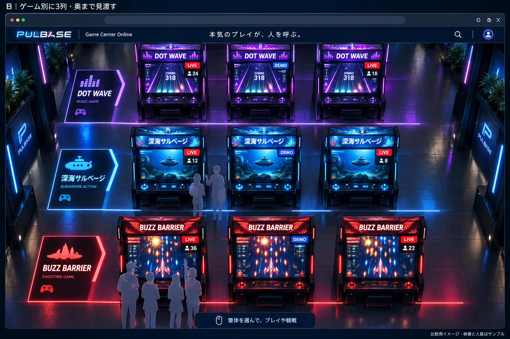
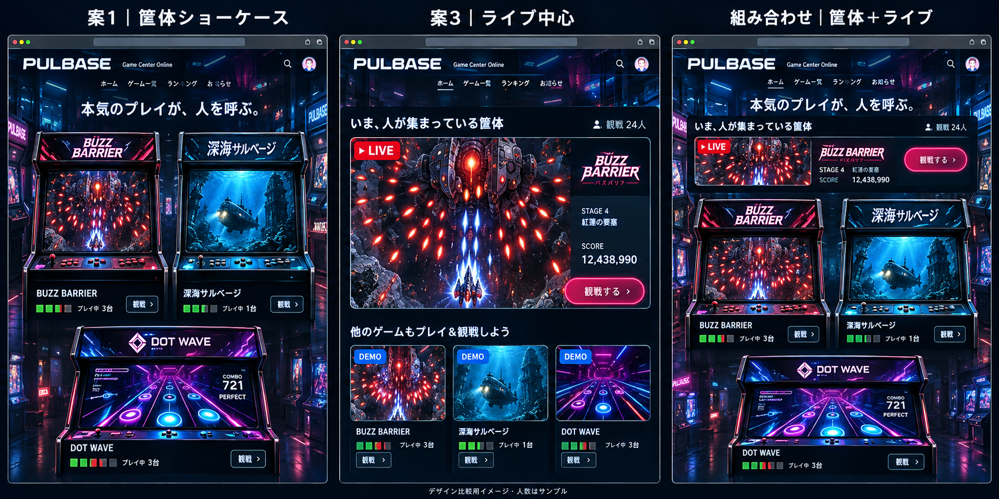

<!doctype html><html lang="ja"><meta charset="utf-8"><meta name="viewport" content="width=device-width,initial-scale=1"><title>PULBASE — トップ検討案とのロゴ比較</title><style>*{box-sizing:border-box}body{margin:0;background:#eaeae6;color:#222;font-family:system-ui,sans-serif}main{width:1100px;max-width:100%;margin:auto;padding:28px}h1{font-size:25px;margin:0 0 10px}p{color:#555;line-height:1.7;font-size:14px;margin:0 0 20px}.card{background:#090b18;border-radius:12px;padding:22px;color:white;margin-bottom:16px;display:grid;grid-template-columns:1fr 1fr;gap:24px;align-items:center;overflow:hidden}h2{font-size:17px;margin:0 0 8px}.note{font-size:13px;color:#aab4d6;line-height:1.8}.logo{width:450px;max-width:100%;height:106px;display:grid;place-items:center}.logo>img{width:440px;max-width:100%;height:auto}.crop{width:450px;height:106px;position:relative;overflow:hidden}.crop img{position:absolute;max-width:none}.b img{width:3840px;left:-105px;top:-220px}.early img{width:4435px;left:-62.5px;top:-230px}.context{display:grid;grid-template-columns:1fr 1fr;gap:18px;margin-top:24px}.context img{width:100%;border-radius:8px}.context h2{font-size:15px}footer{font-size:12px;color:#666;line-height:1.8;margin-top:20px}@media(max-width:760px){main{padding:16px}.card{display:block;overflow:auto}.context{grid-template-columns:1fr}}</style><main><h1>PULBASE — 現在のロゴとトップ検討案</h1><p>「ゲームセンター開発」の最新B案と先行案の、実際の画像内ロゴを比較。新しく描き直さず、元画像を拡大表示しています。</p><section class="card"><div><h2>① 現在 / 面取りP＋シアンの稲妻</h2><div class="note">シンボルの形を先頭Pに統合。<br>縦長寄りの文字、直立、白＋シアン。</div></div><div class="logo"></div></section><section class="card"><div><h2>② 最新B案 / 青く発光する斜体</h2><div class="note">横長の文字と右への傾き。<br>青〜白の光、スピード感、稲妻なし。</div></div><div class="crop b"></div></section><section class="card"><div><h2>③ 先行案 / 白い横長ロゴ</h2><div class="note">横長で密度のある文字。<br>ほぼ直立、装飾が少なく、店の看板らしい。</div></div><div class="crop early"></div></section><div class="context"><div><h2>② 元のトップ検討画像</h2></div><div><h2>③ 元のトップ検討画像</h2></div></div><footer>②③は生成画像内の小さなロゴを拡大したため、文字の輪郭が粗く見えます。書体名や正確な字形は未確定で、採用する場合はSVGとして設計し直す必要があります。<br>サイト・採用ロゴは未変更。画像の切り出し位置は表示用CSSで指定し、参照画像自体は変更していません。</footer></main></html>
